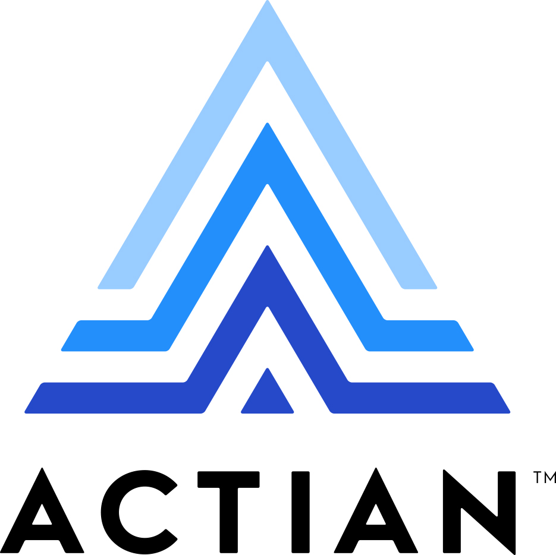

Professional Experience
Data Engineering
Actian Corporation, Sunnyvale, California, USA

Data Engineering Intern
Actian Corporation, Sunnyvale, California, USA
Management Consultant | Business Analyst
Capgemini Ltd., Mumbai, India
Software Engineer | Salesforce Developer
Tech Mahindra Ltd., Pune, India